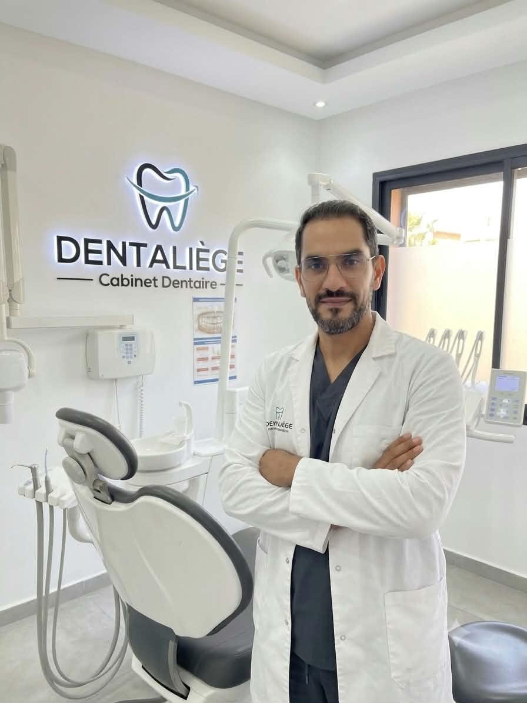

Un chirurgien-dentiste à votre écoute, à chaque étape de votre parcours de soin.

Chirurgien-dentiste
Le Dr. Hamed Benzina vous accueille et vous accompagne à chaque étape de votre parcours de soin, avec une attention particulière portée à l'écoute et à la pédagogie : chaque traitement est expliqué clairement avant d'être réalisé.
Prendre rendez-vous avec le Dr. BenzinaHygiène bucco-dentaire, détartrage et conseils personnalisés au quotidien.
Caries, dévitalisations, suivi de routine et contrôles préventifs réguliers.
Prise en charge rapide des douleurs, dents cassées ou abcès, selon disponibilité.
Implantologie, esthétique dentaire (blanchiment, facettes) et orthodontie.
Pour le Dr. Benzina, un bon soin dentaire commence toujours par une relation de confiance. Il prend le temps d'échanger sur vos attentes et vos éventuelles appréhensions avant de proposer un traitement, et veille à ce que vous repartiez toujours avec des explications claires sur ce qui a été fait et pourquoi.
Un temps d'échange avant chaque traitement pour comprendre vos besoins et vos appréhensions.
Chaque étape du soin est expliquée simplement, pour que vous compreniez toujours ce qui est fait.
Un accompagnement personnalisé, pensé pour rassurer les patients les plus anxieux.
Le Dr. Benzina se forme régulièrement aux nouvelles techniques et technologies dentaires (implantologie, orthodontie invisible, esthétique) afin de proposer des soins conformes aux dernières recommandations.
Prendre rendez-vous